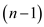
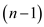
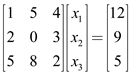
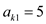
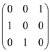
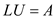
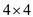

Computing LUP decomposition:
• Consider a matrix A to find the Lower-triangular matrix, Upper-triangular matrix and permutation matrix to be calculated.
• Initially find the nonzero element from matrix A such that the element in first column A (1, 1) is greatest value.
The general equation of LUP decomposition is as follows:
• Now, choose such that the value of A (1, 1) is greatest value.
Or,

Where  is

column vector, is row vector,
is
a
is

column vector, is row vector,
is
a
matrix and.
Consider the following given equation to solve using LUP decomposition:
 …… (1)
Where
and
• To solve the above equation, it is required to find LUP decomposition. That is, for , Upper-triangular matrix and Lower-triangular matrix and permutation matrix need to be find first.
• Swap  with
with
 to
find the greatest absolute value of A (1, 1).
to
find the greatest absolute value of A (1, 1).
So,
Now, select the value  and find
the value of by using
and.
So,
• Now, again swap the value of  with
to
find the greatest absolute value of A (2, 2).
with
to
find the greatest absolute value of A (2, 2).
So,
Now, again select the value and find
the value of by using
and.
• From the above matrix, the Lower Triangular Matrix and Upper Triangular Matrix are as follows:

• Permutation matrix P is the matrix which has exactly one 1 in each row or column and 0 elsewhere.
Therefore,
From the above LUP decomposition, the following matrices are obtained:
Now, the given equation can be solved, by solving the following two triangular liner systems:
Ly=Pb (Forward substitution)
And
Ux=y (Back substitution)
Forward substitution:
• Consider the value of L, P and b to calculate the value of y.
Put the value of L, P and b in Ly=Pb as follows:
= 
Or,
=
• Now, perform the matrix multiplication and solve the equations to obtain y1,y2,y3
Therefore,
• Calculate the value of  by
substituting the value.
by
substituting the value.
So,
• Now, put the value of and
to
find the value of  .
.
So,
Hence,
Back substitution:
So consider the values of U and y to calculate the values of x.
Put the value of U and y in as follows:
=
Now, perform the matrix multiplication to compute x1, x2, and x3
So,
• Put the value of to
calculate the value of 
So,
• Now, find the value of
• Put the value of and
to
calculate the value of 
So,
• Now, calculate the value of,
Thus,
Therefore the solution for the given equation is
If we consider A is a diagonal matrix, i.e.
The LUP decomposition of the diagonal matrix A is A = IAI where I is the identity matrix.
Then this system is extremely easy to decompose in LU matrix.
If a matrix is taken i.e., diagonal then the LUP decomposition have no effect on the lower triangular matrix, and no effect on the upper triangular matrix.
Thus, A = LDU where D is the diagonal matrix and L and U are the unit matrices which are triangular which means that they are identity matrices
A LU decomposition of a permutation matrix A means that the matrix A is the decomposition of a lower triangular matrix (L) and an upper triangular matrix (U)
Let there be 3 matrices: P (inverse matrix), A (permutation matrix), LU (identity matrix)
and PA=LU
A LU decomposition looks like:
• A is the non-singular matrix and possesses an inverse
 and
U is the upper triangular matrix that has non-zero elements at its
diagonals. The computation of the LUP decomposition has the
advantage that the linear system of equations can be solved more
easily as the matrices L and U are triangular.
and
U is the upper triangular matrix that has non-zero elements at its
diagonals. The computation of the LUP decomposition has the
advantage that the linear system of equations can be solved more
easily as the matrices L and U are triangular.
• Let there be some non-zero elements off the diagonal in
L which is the lower triangular matrix, which means
for
i j.
j.
• In the matrix LU, there is a non-zero entry both at the row i and the column j.
• Since, there are more than one non-zero entries in the matrix LU so it cannot be transformed into a permutation matrix by permuting the rows.
• Similarly, the matrix U cannot have any zero entries at the diagonals.
• Since, the permutation matrix A only has one as its non-zero entries and its purpose is to avoid dividing by 0 and LU is the identity matrix(I). This means:
PA=I …… (Since, PA=LU)
P=
This shows that the decomposition is unique.
LU DECOMPOSITION:
LU decomposition is a procedure for decomposing or factorizing
a matrix.
matrix.

For example:
It is decomposed into two parts, upper triangular matrix U which has 0s below the diagonal and lower triangular matrix L which has 0s above the diagonal. As the decomposition is there by applying the properties of matrix, there will be no change in the result of the matrix.
We have to show that for all, there
exists a singularmatrix that
has an LU Decomposition.
A singular matrix is a square matrix (matrix)
which does not have inverse. A matrix is singular matrix if and
only if its determinant is zero.
For considering such a matrix, we take a matrix shown below:
For matrix,
One way to solve for LU, using the linear equation:
Now taking a singular matrix (determinant is zero and does not have inverse),
After solving the above equations, one possible solution that comes out is:
For a matrix,
matrix,
Step wise process to convert the matrix in LU decomposition form:
Consider the LU-DECOMPOSITION (A) algorithm and its process given in the book.
For matrix (a singular matrix),
Now, the above matrix performs an LU decomposition, whose resultant is shown as (either use the above method or here diagonal elements are zero; so during the decomposition only gives the alternate combination of 0 and 1 on diagonal of L and U):
Thus, similarly for all there exists
a singular matrix that
has LU decomposition.
matrix that
has LU decomposition.
LU DECOMPOSITION
LU decomposition is a procedure for decomposing or
factorizing a matrix.
It is decomposed into two parts, upper triangular matrix U which has 0s below the diagonal and lower triangular matrix L which has 0s above the diagonal.
To perform LU decomposition, a process called Gaussian elimination is performed. This is basically used for finding the determinant of matrix or for inverting a matrix
In LU decomposition algorithm, after making the lower and upper matrix of given matrix, the following algorithm is followed:
Consider the LU-DECOMPOSITION from the text book and here are the loops of that algorithm;
for k = 1 to n
ukk = akk
for i = k+1 to n
lik = aik / ukk
uki = aki
for i = k+1 to n
for j = k+1 to n
a ij = aij – lik.ukj
return L and U
The loop will be executed n times for matrix. For
updating the matrix, the loop should trace all the elements of
matrix. This is possible only when the value of loop will iterate
till .
So, there is necessity of outermost for loop iteration when.
Suppose the matrix is of, then the
value of n is 3. This helps in updating the value of upper
and lower matrix.
Within this algorithm the upper and lower matrix are initialized before for loop. The rest of the ‘for’ loops will not work; when. It is because the values takes by them is.
So the outermost for loop has to be performed otherwise the triangular matrix L and triangular matrix U will not get updated.
Due to which time complexity of LU decomposition will
increase from .
.
LUP DECOMPOSITION:
In LUP decomposition we find three matrices
namely L, U and P following:
Here,
U= Upper triangular matrix
L= lower triangular matrix
P= Permutation matrix
This is known as LUP factorization of Matrix A.
In LUP decomposition algorithm, the LU procedure has been replaced by recursion of iteration loop. In this algorithm the array has been build in such a manner that. This means that the matrix P has a value 1 at ith row and jth column.
Consider the LUP algorithm from the text book and here are the loops used in that algorithm;
for k = 1 to n
p = 0
for i = k to n
if |aik| > p
p = |aik|
k’ = i
if p == 0
error “singular matrix”
exchange with
The outermost for loop will not work in the case when.
Suppose the matrix order is, means the
value of n is 3. When the value of k is 3, recursion
process will not re-initialized and therefore the dynamically
maintained matrix P will not be able to implement the
code.
As a result the LUP decomposition will not be performed and the above algorithm will fail.